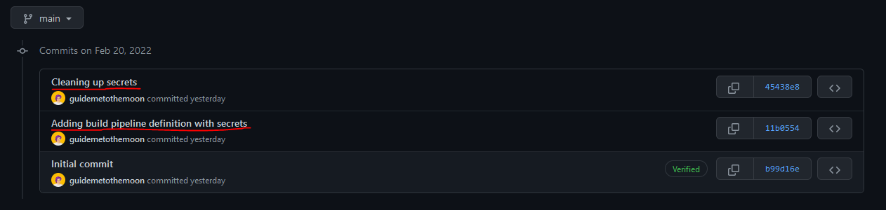
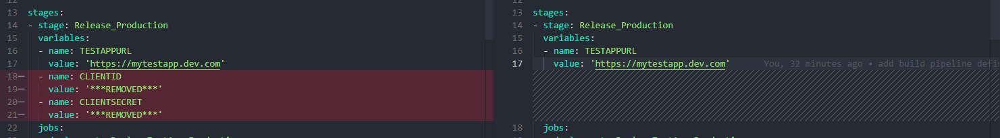
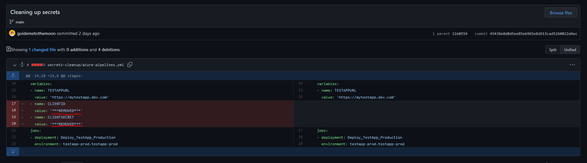
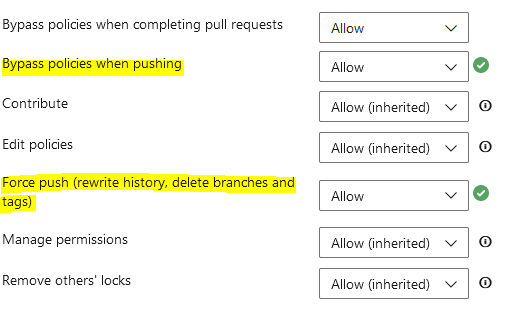
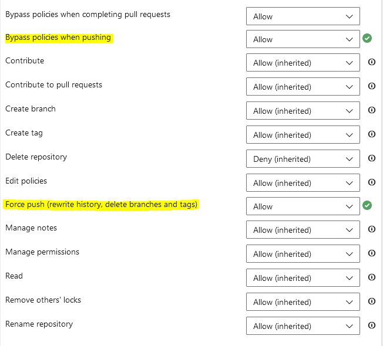

Cleaning Up Secrets in Azure DevOps and GitHub Repositories With BFG Repo-Cleaner
Why should you care about secrets management?
There are very few applications out there that don't require a secret, an API key or a password of some kind. Secrets and sensitive values are a natural part of a software developer's life and are tightly incorporated into software development process. With the vast and diverse amount of cybersecurity threats in the modern world proper secrets management hasn't been as crucial and important as it is now.
Why? Well, if we don't care about where and how we store sensitive data related to our application, and just let it be publicly available in plaintext then we basically tell all the malicious actors out there: "Hey, please get all the user data out of our application and please use it to damage our users and interconnected applications! Thank you!". Not that far-fetched in my humble opinion. If attackers get hold of crucial secrets, their evil job becomes so much easier from that point on: privilege escalation, execution of malicious programs and scripts, stealing user data to sell it on dark web, injection of malicious code to damage as many systems and users as possible, etc. Improper or lacking secrets management can open an ocean of malicious possibilities to those who are up to no good. Therefore, proper secrets management policies must be in place in every organization and proper routines to follow these policies must be enforced as part of the software development lifecycle.
Sometimes mistakes happen. A developer might forget to remove a client secret before committing the changes. At the same time PR reviewer might have been multi-tasking and has overseen that a secret was part of the pull request and approved it. Or it was a faster and easier way to deploy a new microservice by hard-coding the API key that will be used in production - it's so much more time-consuming to create it as a secret and store it somewhere else, in a secure storage…we'll fix it once the service is 100% production-ready! And then we forget….And that's how easy it is to expose bits of your application that should've never been exposed.
If you don't trust me, just search for variations of "password" or "apikey" in GitHub or Google it - you'll catch my drift, this type of mistakes happen pretty often, unfortunately.
Fortunately, there are ways to improve and there are tons of valuable resources out there on how to implement good secrets management policies - I will link some of those in "Additional resources" section. But for now I would like to focus on how we can fix the aftermath and clean-up a secret that was accidentally committed to the source code. Here, BFG Repo-Cleaner tool comes really handy in.
I've committed a secret - now what? o.O
Now let's fix it! Your first thought might be "Well, I can just create a new pull request and remove the secret! Once the PR is merged, the secret is gone from the source code, right? RIGHT?!". Well, not exactly. Though the secret will be gone from the latest version of your source code in master branch, it will still be available in commit history of your repo. If any developers cloned the repo before the secret was removed, they may still have it locally as well, even after you remove it from the source code.
Therefore, if such a mistake has happened and a secret has been committed to the source code you must always consider following approach first:
Once a secret has become publicly available, you must ALWAYS treat it as compromised! If it's possible you must always generate a new secret and deactivate the exposed secret as soon as possible! In some cases it can be more challenging to update the secret immediately - for instance, when you need to go through a time-consuming process involving third-parties in order to update the secret, or when you have a lot of dependencies that it will take time to upgrade. In those cases you can mitigate the issue to some extent by removing the secret from the source code and by changing the repo history with tools like BFG Repo-Cleaner. Nevertheless, such clean-up must always be evaluated on a case-by-case basis and as a temporary solution, until the new secret has been rolled out.
If the first approach is not applicable for now, you can use tools like BFG Repo-Cleaner to perform a clean up of the exposed secrets in your Git repo history. This tool can also be used for other purposes like to reduce the size or the repo or remove large, troublesome files that are no longer in use.
Let's take a look at how this tool can be used in practice.
Cleaning up secrets in Azure DevOps and GitHub repos (or any other Git repo) with BFG Repo-Cleaner
BFG Repo-Cleaner was created by Roberto Tyley and it's open-sourced on GitHub: bfg-repo-cleaner. You can also download the tool directly from here: BFG Repo-Cleaner.
In order to demonstrate how this tool can be used, I've created a minimal version of Azure Pipelines build definition and uploaded it to my GitHub repo: secrets-cleanup. Initially this build definition included some secrets like client id and client secret that were in use by my service - this can be easily detected in the commit history by looking at the commit messages: 
After I've executed BFG Repo-Cleaner, these secrets were cleaned up and marked as ***REMOVED*** in repo history:

You can do the same operations with git filter-branch but it's more complicated and more error-prone. BFG Repo-Cleaner significantly decreases the complexity of clean-up operations and is known for being much more performant than git filter-branch command. For instance, I've tested this on a repo with more than 15 000 files and it took around 4-5 seconds to execute, which I think is a very good result.
So, how can this be done?
Step-by-step walkthrough
First of all, you need to ensure that you have Java Runtime Environment (JRE) installed since BFG Repo-Cleaner is a Java application. Or you can run it in a container with Jave pre-installed ;-) Once you've done that and downloaded BFG Repo-Cleaner we can start our clean up! I recommend saving the tool to the same folder where your Git repository will be cloned to so that you can easily call the tool through the command line without needing to provide the long file path to the tool.
First, we'll need to clone a fresh copy of our repo with git clone --mirror command:
PS C:\Playground\test-cleanup> git clone --mirror https://github.com/guidemetothemoon/demo-projects.git
Cloning into bare repository 'demo-projects.git'...
remote: Enumerating objects: 12, done.
remote: Counting objects: 100% (12/12), done.
remote: Compressing objects: 100% (8/8), done.
remote: Total 12 (delta 3), reused 8 (delta 2), pack-reused 0
Receiving objects: 100% (12/12), 4.35 KiB | 1.45 MiB/s, done.
Resolving deltas: 100% (3/3), done.
PS C:\Playground\test-cleanup> ls
Directory: C:\Playground\test-cleanup
Mode LastWriteTime Length Name
---- ------------- ------ ----
d---- 2/20/2022 1:31 PM demo-projects.gitThis will create a full copy of the Git database of the respective repository. Before you proceed, you must take a backup of it to ensure that you can restore to the initial state of the repository in case anything goes wrong during clean-up.
Once you have taken the backup we can start with the clean up. First we'll need to create a local txt-file that will include all the secrets we want to replace. This file will be used by BFG Repo-Cleaner to locate in which files and folders in the repository these secrets were exposed. Since I want to clean up client id and client secret I will create following file and call it "secrets.txt":
# secrets.txt
5ff4ff61-2caf-4676-a9e6-7b5e7f5e5b24
54614838-b267-4276-a423-f2915160bc70Please note that the values are separated with a new line. File can be saved wherever it's easily accessible - I will save it to the same folder where I cloned my Git repo database to. Now we have everything we need in order to do the clean up. We can do that by executing java -jar bfg.jar --replace-text "C:\Playground\test-cleanup\secrets.txt" demo-projects.git command:
PS C:\Playground\test-cleanup> java -jar bfg.jar --replace-text "C:\Playground\test-cleanup\secrets.txt" demo-projects.git
Using repo : C:\Playground\test-cleanup\demo-projects.git
Found 4 objects to protect
Found 2 commit-pointing refs : HEAD, refs/heads/main
Protected commits
-----------------
These are your protected commits, and so their contents will NOT be altered:
* commit 5066f64e (protected by 'HEAD')
Cleaning
--------
Found 3 commits
Cleaning commits: 100% (3/3)
Cleaning commits completed in 1,291 ms.
Updating 1 Ref
--------------
Ref Before After
-------------------------------------
refs/heads/main | 5066f64e | 45438e8d
Updating references: 100% (1/1)
...Ref update completed in 71 ms.
Commit Tree-Dirt History
------------------------
Earliest Latest
| |
. D m
D = dirty commits (file tree fixed)
m = modified commits (commit message or parents changed)
. = clean commits (no changes to file tree)
Before After
-------------------------------------------
First modified commit | 08b69254 | 11b05548
Last dirty commit | 08b69254 | 11b05548
Changed files
-------------
Filename Before & After
-----------------------------------------
azure-pipelines.yml | 578e8c2d ? 43f73acf
In total, 4 object ids were changed. Full details are logged here:
C:\Playground\test-cleanup\demo-projects.git.bfg-report\2022-02-20\13-32-27
BFG run is complete! When ready, run: git reflog expire --expire=now --all && git gc --prune=now --aggressiveWhat happened now is that BFG Repo-Cleaner updated all the commits, branches and tags and replaced all the secrets defined in secrets.txt with ***REMOVED*** placeholder. Pay attention to the following message popping up in the command output:
These are your protected commits, and so their contents will NOT be altered:
* commit 5066f64e (protected by 'HEAD')This message means that the tool has identified the latest commit to master branch which it locks and will NOT overwrite, even if it contains an exposed secret. Therefore, before running the tool you need to ensure that the latest commit in master branch doesn't contain the exposed secrets or you will need to re-run the tool once a new, secret-free commit is added to master.
BFG Repo-Cleaner also generates a report that can make it easier for you to examine the changes that have been done before they're pushed to the remote repository. As you can see in the bottom of the script full details have been logged to a separate folder that was created in the same directory from which you called the tool - reponame.git.bfg-report. The files we're most interested in are:
- changed-files.txt - in this file you can see which files have been changed. For my test repo this file looks like this:
# changed-files.txt
578e8c2dcebb3779dad0a81818a50e2413214f82 43f73acf0f846d95ed2d70df150f50a50587d49e azure-pipelines.yml- object-id-map.old-new.txt - in this file you can see all the commit id-s that have been changed and the new commit id-s that have been generated for the changes. For my test repo this file looks like this:
# object-id-map.old-new.txt
08b69254b55f93d02babae751b9573575dc39327 11b05548da5d1900066d13d048da6ce98e249426
5066f64e23210c4b330faa66275341ea6ef66bbe 45438e8d0d5ee85eb965e8d913cad5268022d4ec
5425a45028c81027ec4a682ba6091a31c36cfc37 8ef38ab0aa8a2139d46f0145b699eb5d51f06302
7f941aed9eea2d41f309ae73df50ff4bcb852c85 c186c1ab4c6e13ac8790fdac7f2ce5212e3afb28Let's check some of the commits and what those have been changed to - let's take the first commit id from the list, navigate to the Git repo folder and check how the initial commit looks like with git show:
PS C:\Playground\test-cleanup\demo-projects.git> git show 08b6925
commit 08b69254b55f93d02babae751b9573575dc39327
Author: Kristina D. <g********@gmail.com>
Date: Sun Feb 20 13:29:43 2022 +0100
Adding build pipeline definition with secrets
diff --git a/secrets-cleanup/azure-pipelines.yml b/secrets-cleanup/azure-pipelines.yml
new file mode 100644
index 0000000..578e8c2
--- /dev/null
+++ b/secrets-cleanup/azure-pipelines.yml
@@ -0,0 +1,28 @@
+name: $(BuildDefinitionName)_$(date:yyyyMMdd)_$(Build.SourceBranchName)$(rev:.r)
+
+trigger:
+ batch: true
+ branches:
+ include:
+ - master
+
+pool:
+ vmImage: 'ubuntu-latest'
+
+stages:
+- stage: Release_Production
+ variables:
+ - name: TESTAPPURL
+ value: 'https://mytestapp.dev.com'
+ - name: CLIENTID
+ value: '5ff4ff61-2caf-4676-a9e6-7b5e7f5e5b24' # -> Secret's Present!
+ - name: CLIENTSECRET
+ value: '54614838-b267-4276-a423-f2915160bc70' # -> Secret's Present!
+ jobs:
+ - deployment: Deploy_TestApp_Production
+ environment: testapp-prod.testapp-prod
+ strategy:
+ runOnce:
+ deploy:
+ steps:
+ - template: build-templates/init-deployment.yml
\ No newline at end of fileAs you can see, the secrets are there, as expected, since this commit represents the state before the changes have been applied by the tool. From the txt-file above we can see that this commit id was mapped to the commit with id 11b05548da5d1900066d13d048da6ce98e249426 - let's check how the changes in that commit look like:
PS C:\Playground\test-cleanup\demo-projects.git> git show 11b0554
commit 11b05548da5d1900066d13d048da6ce98e249426
Author: Kristina D. <g********@gmail.com>
Date: Sun Feb 20 13:29:43 2022 +0100
Adding build pipeline definition with secrets
diff --git a/secrets-cleanup/azure-pipelines.yml b/secrets-cleanup/azure-pipelines.yml
new file mode 100644
index 0000000..43f73ac
--- /dev/null
+++ b/secrets-cleanup/azure-pipelines.yml
@@ -0,0 +1,28 @@
+name: $(BuildDefinitionName)_$(date:yyyyMMdd)_$(Build.SourceBranchName)$(rev:.r)
+
+trigger:
+ batch: true
+ branches:
+ include:
+ - master
+
+pool:
+ vmImage: 'ubuntu-latest'
+
+stages:
+- stage: Release_Production
+ variables:
+ - name: TESTAPPURL
+ value: 'https://mytestapp.dev.com'
+ - name: CLIENTID
+ value: '***REMOVED***' # -> Secret's Gone!
+ - name: CLIENTSECRET
+ value: '***REMOVED***' # -> Secret's Gone!
+ jobs:
+ - deployment: Deploy_TestApp_Production
+ environment: testapp-prod.testapp-prod
+ strategy:
+ runOnce:
+ deploy:
+ steps:
+ - template: build-templates/init-deployment.yml
\ No newline at end of fileCheck that out! Just as I said, client id and client secret got cleaned up - very nice! Once we have done the verification of changes, we can push them to the remote repository by running git reflog expire --expire=now --all && git gc --prune=now --aggressive and git push commands:
PS C:\Playground\test-cleanup\demo-projects.git> git reflog expire --expire=now --all && git gc --prune=now --aggressive
Enumerating objects: 12, done.
Counting objects: 100% (12/12), done.
Delta compression using up to 4 threads
Compressing objects: 100% (10/10), done.
Writing objects: 100% (12/12), done.
Building bitmaps: 100% (3/3), done.
Total 12 (delta 3), reused 4 (delta 0), pack-reused 0
PS C:\Playground\test-cleanup\demo-projects.git> git push
Enumerating objects: 12, done.
Writing objects: 100% (12/12), 4.30 KiB | 2.15 MiB/s, done.
Total 12 (delta 0), reused 0 (delta 0), pack-reused 12
remote: Resolving deltas: 100% (3/3), done.
To https://github.com/guidemetothemoon/demo-projects.git
+ 5066f64...45438e8 main -> main (forced update)Now the changes are merged and the history of the respective repository has been overwritten with secrets all cleaned up! Please note that this will not create a new commit since the purpose of the tool is to update the existing commits, therefore the merged changes will not reflect in the timestamps or +1 commit in the repo history UI.
Now let's check one of the existing commits where the secrets were exposed and see how it looks like after the changes:

The secrets are not there, awesome! If we attempt to check the initial commit that had secrets in plaintext, we can see that it's not available anymore and was deleted for good:
PS C:\Playground\test-cleanup\demo-projects.git> git show 08b6925
fatal: ambiguous argument '08b6925': unknown revision or path not in the working tree.
Use '--' to separate paths from revisions, like this:
'git <command> [<revision>...] -- [<file>...]'And we're done, at least for now! As I mentioned earlier, you should still re-generate the secrets wherever it's possible and as fast as possible. But this is also a possibility that can help you mitigate exposure to some extent and temporarily.
Final note on permissions in Azure DevOps repos
Normally you should have proper policies and permissions in place in your repository, be it Azure DevOps, GitHub or any other Git repo. Policies will prevent anyone from directly pushing changes to the master branch or performing other destructive actions like deleting a tag or repository. Therefore, if you need to push changes like this to the Azure DevOps repo where proper policies are enabled, you must ensure that you have following permissions in place for your account before you attempt pushing the changes done by the tool:
For every branch to be updated (master, dev, hotfix, etc.), you must have "Allow" permissions set for the policies: "Bypass policies when pushing", "Force push (rewrite history, delete branches and tags)":

If the repository has tags, you must have "Allow" permissions set for your account for the following policies on the Repository level: "Bypass policies when pushing", "Force push (rewrite history, delete branches and tags)":

Additional resources
I've just covered one use case where BFG Repo-Cleaner can be used but there are many more use cases where you can use this tool as well. You can read more about the usage areas here: BFG Repo Cleaner - Usage
Some good resources about secrets management and why this is important:
- Why Secrets Management is Critical to DevOps Pipeline Security
- DevSecOps, Containers, & Unified Secrets Management
- BeyondTrust - Secrets Management
- Cyberark - Secrets Management
That's it from me this time, thanks for checking in! If this article was helpful, I'd love to hear about it! You can reach out to me on LinkedIn, GitHub or by using the contact form on this page :)
Stay secure, stay safe.
Till we connect again!